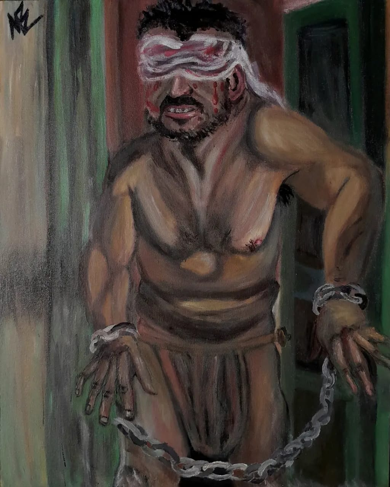
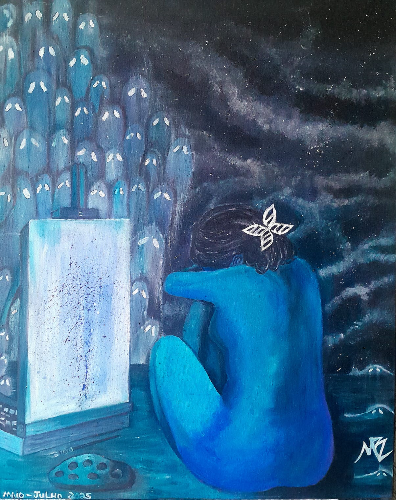
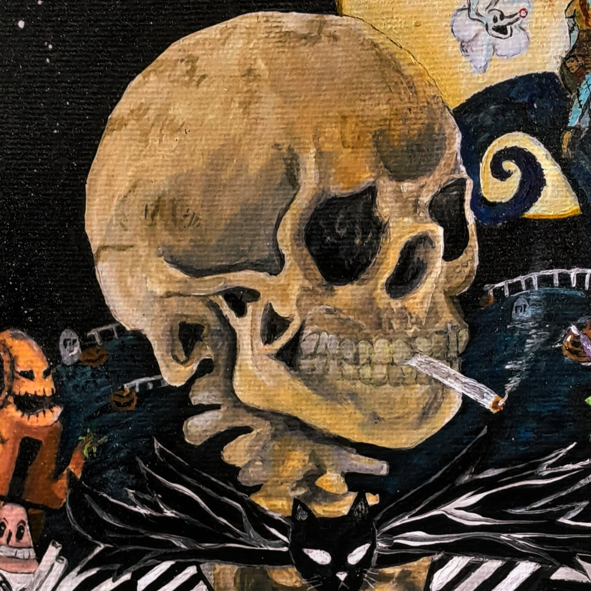
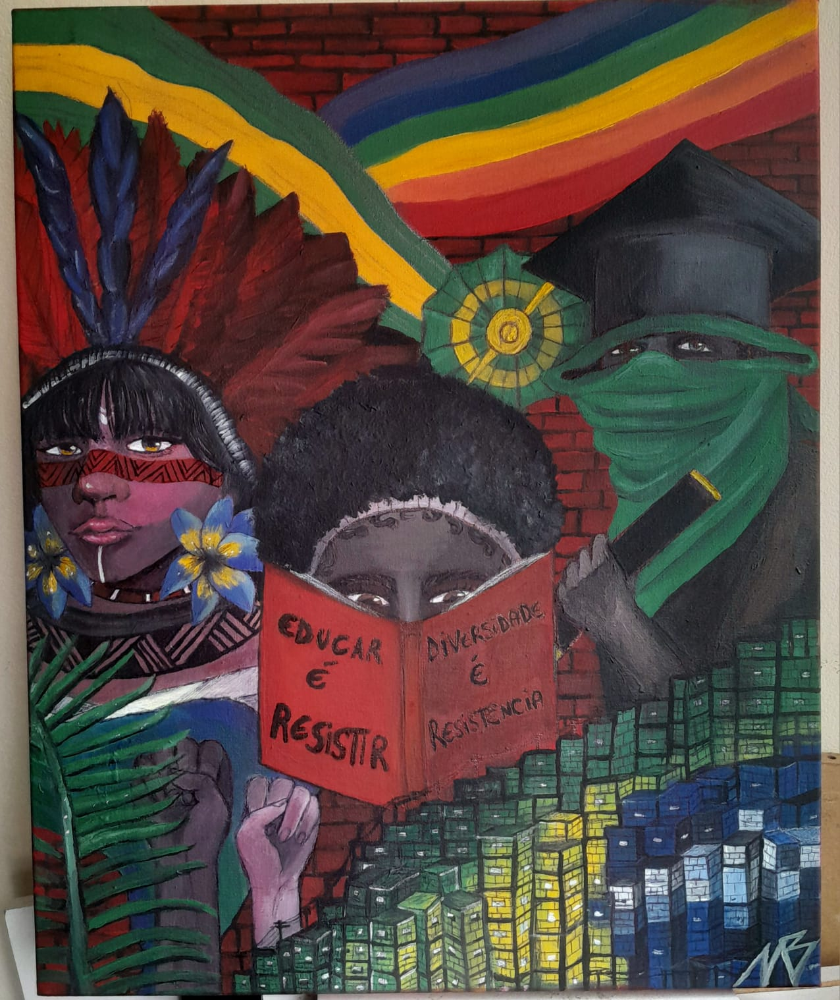
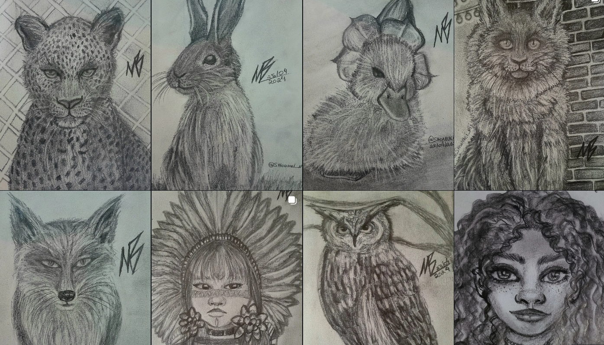
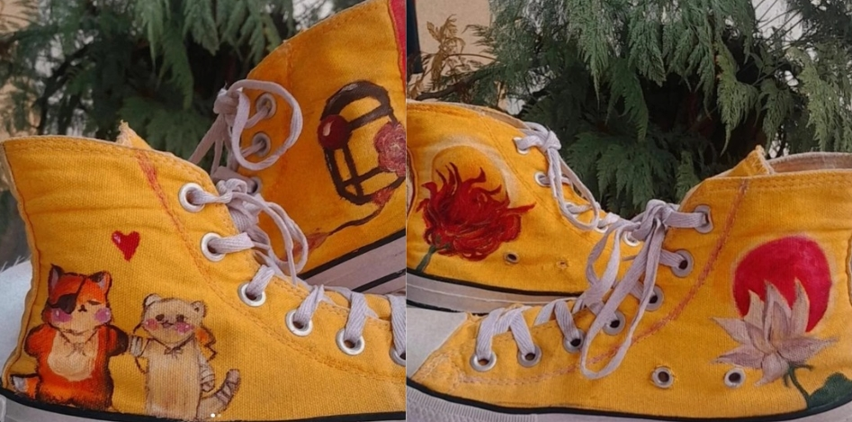
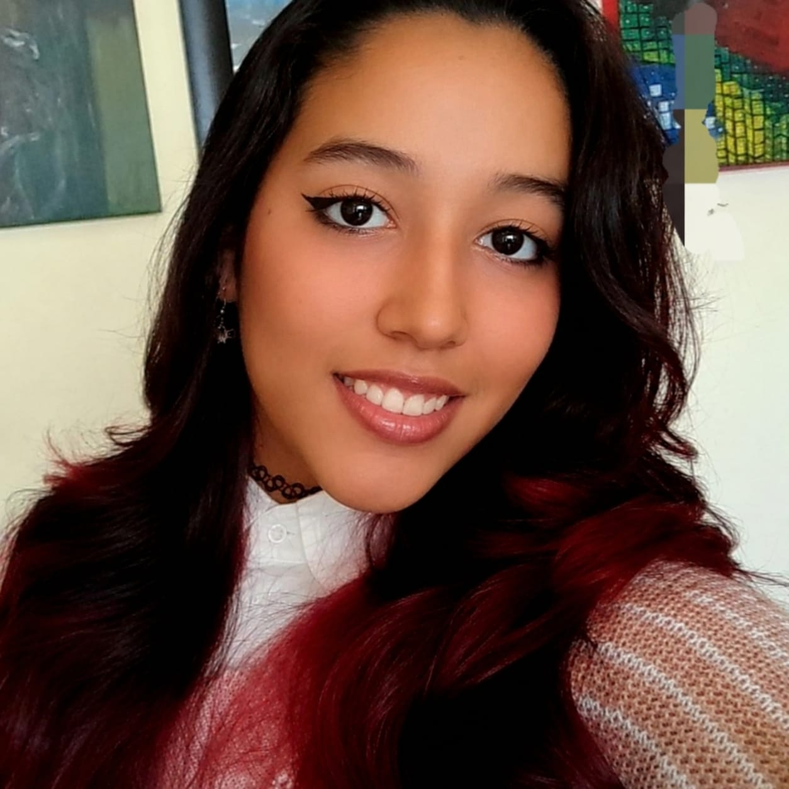

CromoSig Manutenções
Logotipo · 2025
Criações
Algumas das minhas obras físicas feitas à mão: tinta, papel e tecido. Cada peça começa num caderno de esboços e termina na tela, no tecido ou na mesa de alguém.






Criações
Logotipos, identidades visuais e peças gráficas. Do rascunho no papel ao vetor final, com paleta, tipografia e regras de uso.
Logotipo · 2025
Identidade visual do zero · 2026
Logo e identidade · 2025
Panfleto e logo · 2024
Código
Alguns sites e interfaces front-end desenvolvidos durante o curso na Etec, escritos à mão em HTML, CSS e JavaScript.
Trabalho do primeiro ano de curso. HTML, CSS e JS.
O Azul em Sintonia conecta equipes e mantém passageiros informados durante ocorrências operacionais.
Aplicação de auxílio na organização e gestão para criadores de eventos e festas sociais. (em breve disponível)
Biografia

Oi, eu sou a Manuela de Britto!
Pinto desde criança e sempre tive interesse em design e suas diversas áreas. Atualmente estou no último ano do ensino médio integrado com técnico de informática para internet e tive afinidade para tarefas visuais como: criações gráficas, arte digital e Front-end. Com essa minha vontade realizei diversas tarefas do meio e ajudei em eventos e criações de identidade visuais não só escolares mas por fora também em conjunto com artes tradicionais que realizo e divulgo. Hoje divido meu tempo entre auxílio em itens artísticos escolares, pintura, e editor de código.
No design gráfico, gosto de marcas com personalidade, que pareçam feitas por gente. No front-end, gosto de páginas que se movem com intenção. Estou aberta a encomendas de arte, projetos de identidade visual e oportunidades de estágio.
Contato